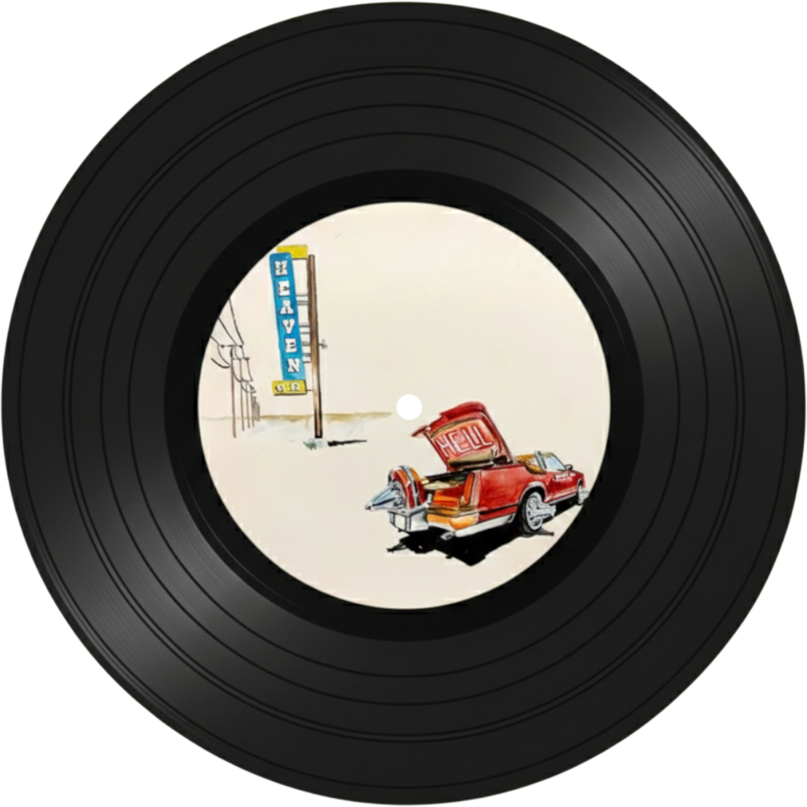
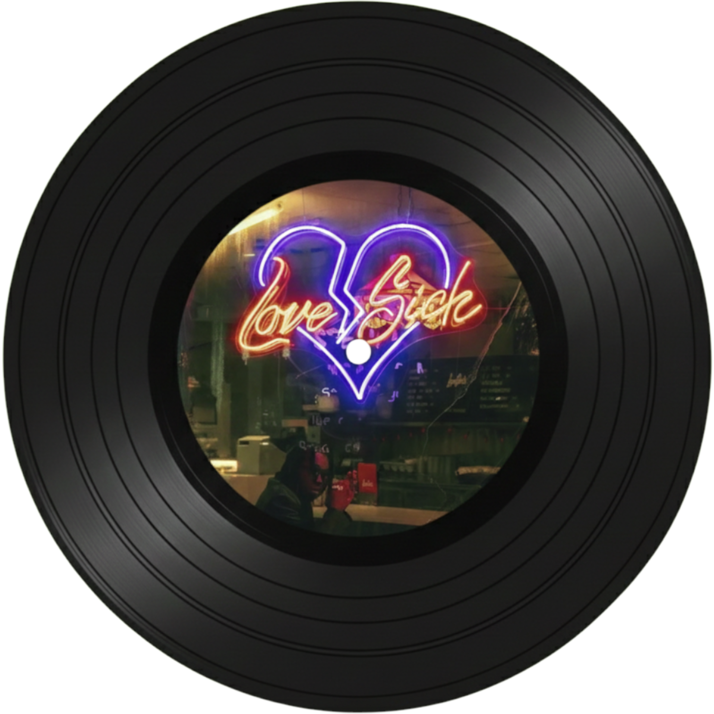

Don Toliver

Caleb Zackery Toliver
국적: 🇺🇸미국 텍사스 휴스턴
출생: 1994년 6월 12일
레이블: Cactus Jack Records
애틀랜틱 레코드
데뷔: 2018년

No Idea
반복되는 멜로디 훅이 귀에 감기는 중독적인 사운드가 특징이다.
You (feat. Travis Scott)
부드러운 보컬 라인 위에 그루비한 멜로디, 스캇의 피처링이 시너지를 내는 곡이다.

No Pole
강렬한 베이스와 몽환적인 신스가 어우러진 사이키델릭 트랩 사운드가 인상적이다.
5 to 10
레이드백한 보컬과 하드한 808 드럼이 대비를 이루는 현대적인 힙합 트랙이다.